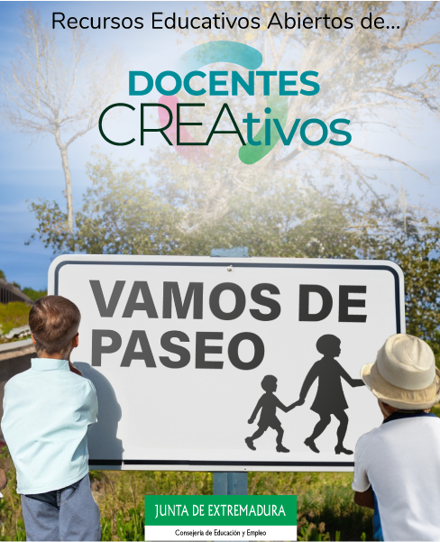

Guía didáctica
Título: REA "Vamos de paseo".
Temática: Seguridad Vial.
Materia: Tutoría, transversal.
Curso: Educación Primaria, primer ciclo.
Sesiones: 4 sesiones de aula.
Producto final: Los alumnos elaborarán una tarea final que consta de cuatro pequeños retos: El primer reto, consiste en crear una pequeña historia que refleje una situación o problema relacionada con la Educación Vial. En el segundo reto, los alumnos tienen que rellenar una hoja de registro durante una salida escolar demostrando que conocen muy bien todas las normas de seguridad que han aprendido relacionadas con la Educación Vial. En el tercer reto deben trabajar en grupo y explicar a los compañeros tres normas o consejos de seguridad básicos que hayan aprendido. Por último, en el reto final, los alumnos grabarán, con ayuda de un docente, un pequeño vídeo informativo sobre Seguridad Vial.
Objetivos: el objetivo principal de esta unidad didáctica es que el alumnado conozca qué es la Seguridad Vial y la importancia de respetar las normas para lograr una adecuada convivencia. Además, se fomentarán los siguientes objetivos del currículo: Objetivos a), e) y n) del currículo, transformados en las siguientes capacidades:
a) Conocer y apreciar las normas de convivencia, aprender a obrar de acuerdo con ellas de forma empática, prepararse para el ejercicio activo de la ciudadanía y respetar los derechos humanos, así como el pluralismo propio de una sociedad democrática.
e) Conocer y utilizar de forma apropiada la lengua castellana.
n) Desarrollar hábitos cotidianos de movilidad activa autónoma saludable, fomentando la educación vial y actitudes de respeto que incidan en la prevención de accidentes de tráfico
Breve descripción: La metodología principal utilizada será el aprendizaje basado en proyectos teniendo como centro de interés "La seguridad Vial" planteando a los alumnos una serie de retos y problemas que tienen que resolver.
El bloque de contenidos incluye dos secciones principales:
- Sección una "aprendiendo a circular" donde aprenderemos qué es la Seguridad Vial y su importancia, cuáles son las normas de seguridad básicas y cuáles son las señales de tráfico que podemos encontrar de forma habitual en nuestra población.
- Sección dos "Repasamos bailando" donde aprenderemos, a ritmo de canción qué consejos de seguridad debemos tener en cuenta para ser un buen peatón y un buen conductor.
Tras las secciones principales, el recurso incluye una situación de aprendizaje que consta de dos secciones: "Creamos historias" y "ahora te toca a ti" donde los alumnos pondrán en práctica lo aprendido.
Finalmente, tenemos esta sección: Guía didáctica y fichero fuente, con la descripción del REA y posibilidad de descargar el fichero fuente en formato editable por eXeLearning.